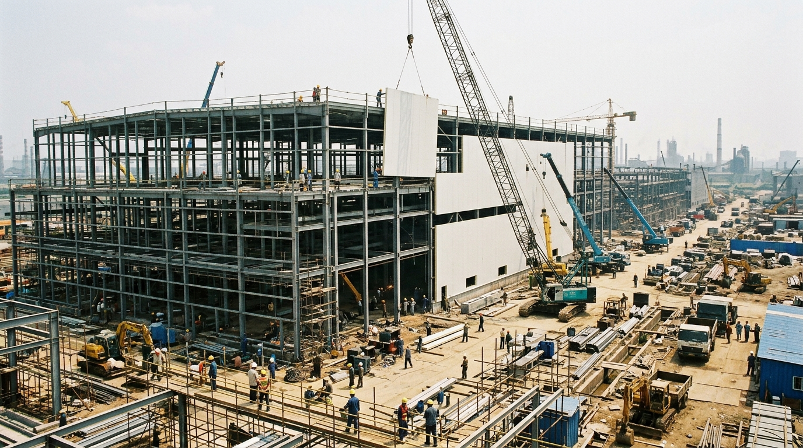
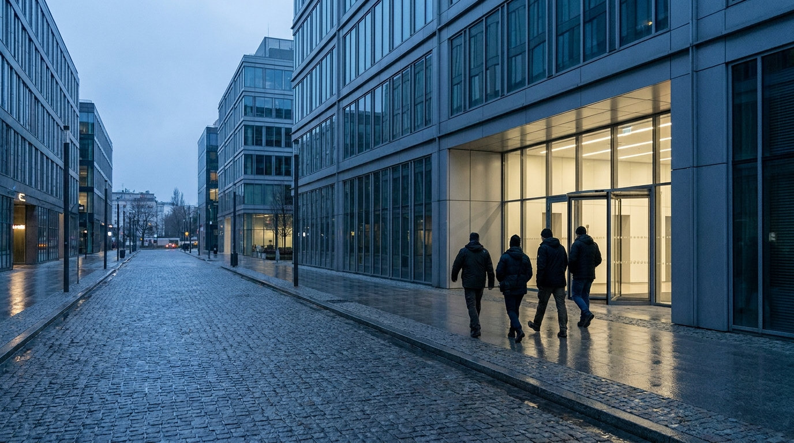
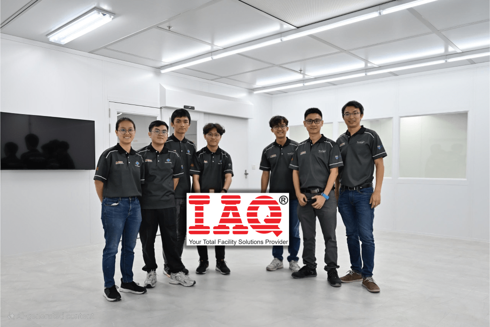
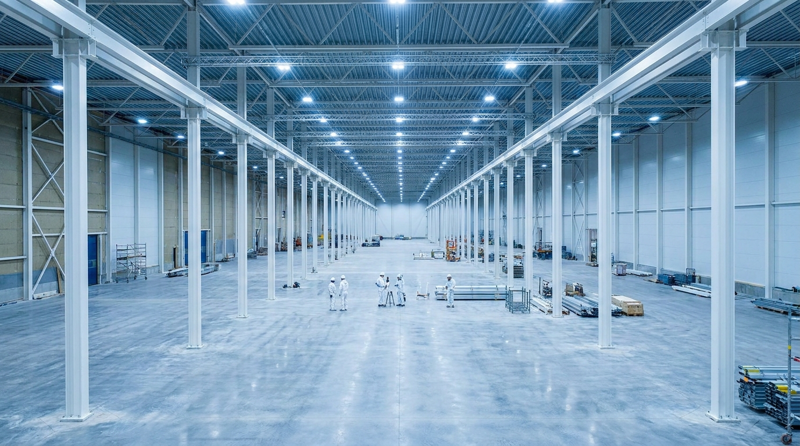
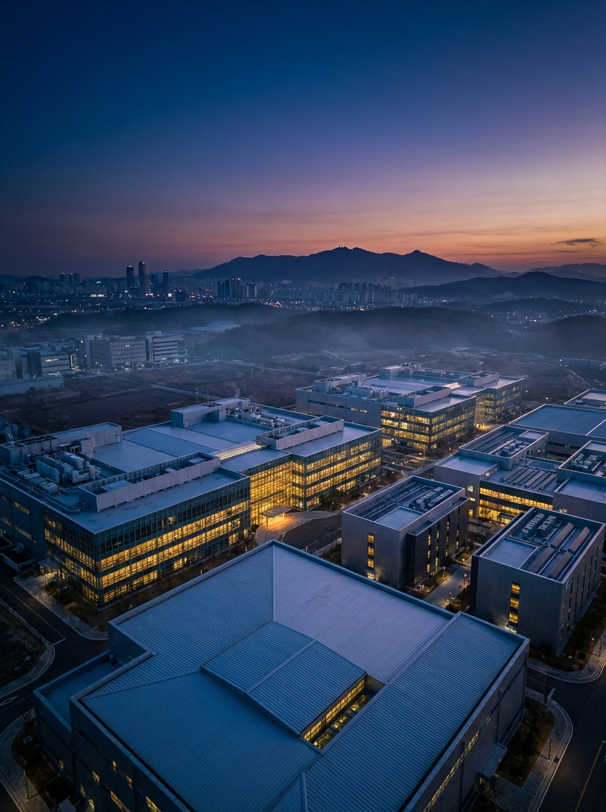
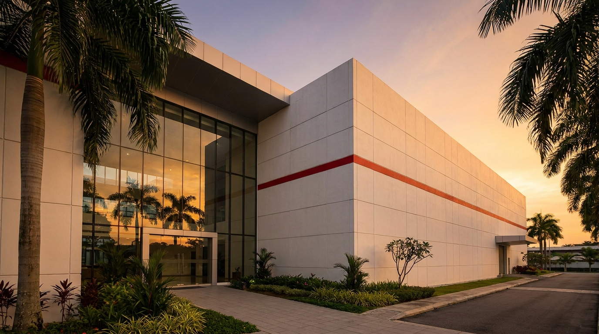
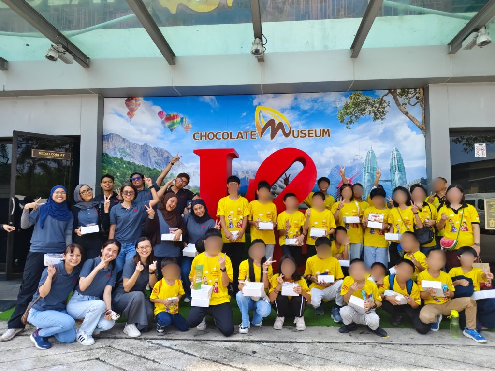
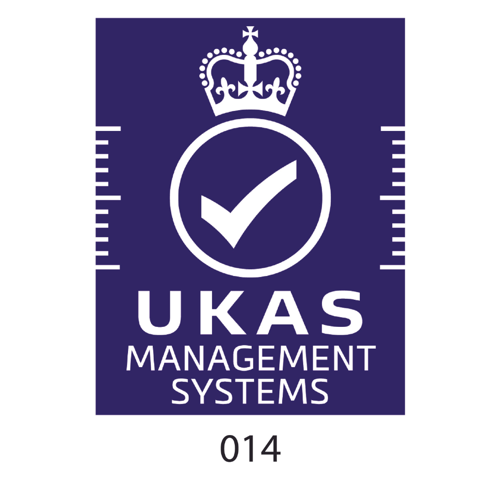
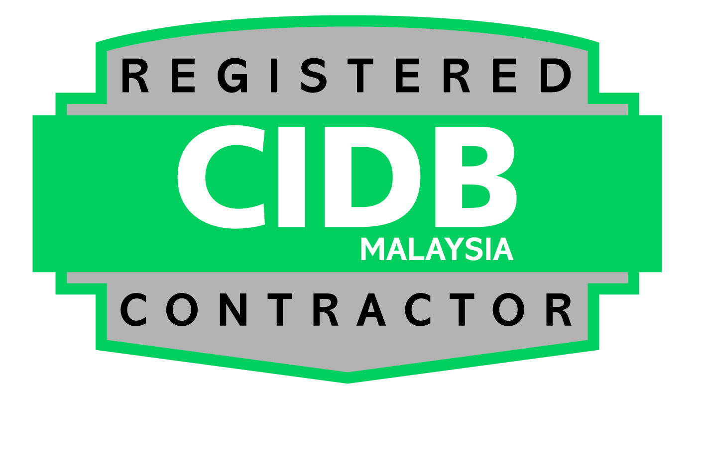

Interim · current site
1994
Founded on air
Ir. Tiew Soon Aik establishes IAQ in Malaysia as a cleanroom specialist: a small office, a blueprint and an unrelenting spirit.
Thirty-two years of engineering the environments where semiconductors, EV batteries, data and life sciences are made. One team, accountable from design to maintenance, now building across eight countries.
IAQ began in 1994 with the air itself: indoor air quality, in a country building its high-tech future.
Three decades on, we design, procure, build, commission and maintain the cleanest environments on earth.
Globally a cleanroom specialist. Regionally, the total solutions partner behind Malaysia's most demanding facilities.
"IAQ's humble journey begins out of a small office, armed with little more than a blueprint and unrelenting spirit." Locally founded and still locally owned, the group has grown from that office into a builder of hi-tech facilities across eight countries, with the same promise it started with: everybody goes home safe, and the room performs to specification.
Drag through three decades: a small office in 1994 to listing-grade today.
Ir. Tiew Soon Aik establishes IAQ in Malaysia as a cleanroom specialist: a small office, a blueprint and an unrelenting spirit.

Interim · AI concept25,000 m² of cleanroom, M&E and utilities delivered in China for the dot-com boom's chipmakers: the first project beyond Malaysia, with more across China to follow.

Interim · AI conceptA branch office opens in Poland for engineering, procurement, construction and commissioning; a project in France follows on a client's recommendation.

Interim · concept assetA 14,000 m² Class 1 cleanroom is built in Ipoh, among the cleanest rooms in the region, as the group extends its reach to Morocco.
Main contractor for Malaysia's largest district cooling plant: an RM310 million system serving 56,000 parties, delivered with zero lost-time injury and a 25-year maintenance mandate.
An RM122 million, 43,000 m² backend facility marks a new order of scale; Class 100 cleanroom works for the national wafer-fab initiative follow a year later.

Interim · AI conceptDry rooms and architectural works for a Swedish gigafactory carry IAQ into EV batteries; an RM215 million green-certified plant lands ahead of schedule through the pandemic.

Interim · concept assetAn RM900 million wafer-fab expansion in Kulim, entry into data centres, and a full design-and-build fab expansion in Kuching the following year.

Interim · AI conceptA second Malaysian base opens in Penang; IAQ Engineering (DE) GmbH opens in Dresden, joining offices in Singapore, France and India.

Interim · concept assetEight countries, 450 people, more than 250 projects and over a million square metres of cleanroom built-up, and a group preparing for its public listing.
To be a regional facility solutions provider with engineering excellence, facilitating technological innovation and advancement in quality of life.
The globe carries the record: red markers on every country IAQ has built or opened in. Regional leadership means the home market first, Malaysia and Southeast Asia, with Europe and India as the growth arc and engineering excellence as the entry ticket.
Providing innovative and sustainable facility and engineering solutions benefitting our clients and stakeholders, driven by our leadership, employees and partners globally.
The mission is built one facility at a time: innovative and sustainable in the same breath, energy-efficient builds with ISO-managed impact, outcomes measured for clients and stakeholders, delivered by leadership, employees and partners working as one team.
An injury-free workplace where everybody goes home safe, on every site, every day.
Proactive quality management through established systems and digitalised tracking.
Transparent communication of accurate information, encouraging openness and sincerity.
A multi-disciplinary in-house team carrying more than two decades of excellence.
Fast-track execution with innovative solutions, without trading away the standard.
The highest degree of engineering excellence, held to ethical standards throughout.
"We firmly believe that all incidents are preventable, and that there is no task so important that it is worth endangering the health and wellbeing of our employees and partners."
ISO 14001-managed impact: waste minimisation, resource conservation and energy-efficient, eco-friendly engineering on every site.
Employee wellbeing, safe communities, a diverse and inclusive workplace, ethical labour practice, and community programmes at home in Malaysia.
Transparency, accountability and compliance standards, held to the bar regulators and investors expect of a public company.


ISO 9001:2015ISO 14001:2015ISO 45001:2018Gold · OSH 2024 List · full ESH awards, attachment from IAQ pendingEngineering, procurement and construction of hi-tech facilities, delivered end to end by one team from concept to handover.
The systems production lives on: process utilities, hook-up and tool installation, built and commissioned to specification.
Sustainable performance after handover: district cooling, energy efficiency and the long-term health of the facility.
12, Jalan Sungai Jeluh 32/192, Kawasan Perindustrian Kemuning, Seksyen 32, 40460 Shah Alam, Selangor.
9, Lorong Valdor Jaya 2, Kawasan Perindustrian Valdor, 14200 Jawi, Penang.
IAQ Engineering (DE) GmbH, 8.OG, Budapester Strasse 5, 01069 Dresden.
Structure shown for layout: the final line-up, names, titles and portraits are to be confirmed by IAQ before publication.
From feasibility to handover, one accountable team. Response within one working day.